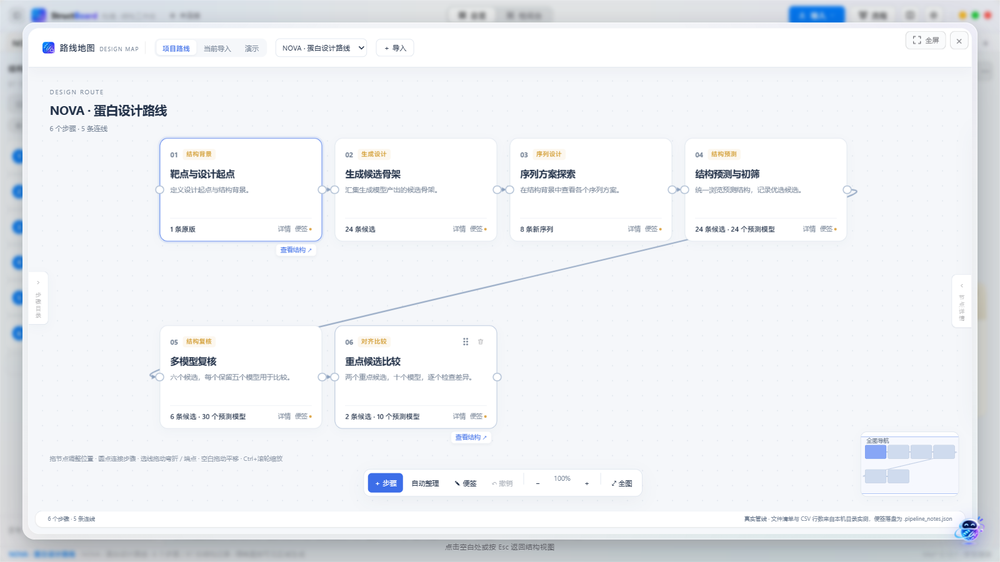
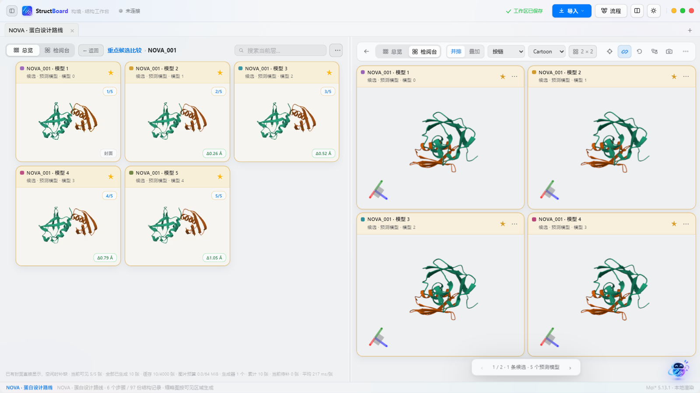

01理解路线
接手一条设计路线
把已记录的步骤与关系展开成路线图，从节点进入对应结构，为复核建立上下文。
蛋白设计的本地结构复核工作台
把已有结构、设计步骤与复核记录放在同一工作区。在路线与结构之间切换，比较候选，记录取舍。

路线 → 比较 → 判断
导入已有结果，用结构、指标和记录支持人工复核。构境不运行蛋白设计或结构预测。
把已记录的步骤与关系展开成路线图，从节点进入对应结构，为复核建立上下文。
把多个模型放在一起，与参考结构对齐、联动观察；结合已导入的指标，逐项比较。
用星标保留关注对象，用步骤与文件夹便签记录理由。保存工作区，下次继续复核。
真实软件画面
切换查看路线、候选比较、分屏检阅和 AI 连接状态。画面来自 StructBoard 实际软件界面。

并排检阅，而非反复切换
把不同模型按候选分组或逐个平铺。结构对齐后可联动浏览视角；星标和参考结构留在当前工作区，让比较围绕同一组对象进行。
按候选组织多个模型，保留完整软件窗口。对齐受结构条件、格式与机器资源限制。
保留全貌，随时回溯
回到总览，找到候选所在的步骤；切到检阅台，把关注的结构并排展开。管线可在多个标签中分别管理，也可以拆成独立窗口。

分屏检阅 · 左侧保留候选总览，右侧旋转、对照结构。
两种 AI 入口 · 独立配置
外部客户端通过 MCP 访问构境；内置助手直接在工作台中对话。两种入口分别配置，权限与确认规则各有边界。
01 / 外部 AI 客户端 · MCP
使用客户端自己的模型服务，查询已有步骤与指标；按授权打开结构、整理星标与便签。
02 / 内置 AI 助手 · 自选模型接口
查阅已有步骤、条目、指标与便签，在对话中获得解释和整理建议。
本地文件读取与结构渲染可独立使用。启用内置助手后，对话、工作区上下文与查询结果会发往所配置接口；MCP 将工具结果交给已授权客户端，由客户端决定后续模型调用。数据与隐私 ↗
34 秒 · 白色界面实录 · 中文配音
暂时无法播放，请直接打开 MP4 视频。
NOVA 虚构管线与公开示例结构仅用于展示操作，不代表真实设计成果、预测质量或实验结论。
开始之前
v0.3.0 · Windows 10/11 x64
安装版与便携版 · GPL-3.0-only
不会。构境整理已有的管线、结构文件和指标，用于浏览、对照与记录判断。它不生成蛋白序列，不运行蛋白设计或结构预测，也不提供实验结论或预测能力。
可以。本地文件读取、结构渲染、路线整理和结构比较可独立使用。MCP 与内置助手按需配置；向导适配的是 Claude Code，Claude Desktop 不在本版向导适配列表中。
使用内置助手时，对话、当前工作区上下文和查询结果会发往你配置的接口，可能包含条目名称、便签、指标与管线相对路径。MCP 将已授权工具的结果交给对应客户端，后续模型调用由客户端决定。发送内容取决于实际请求与授权范围。
内置助手改变数据或视图前需你确认。MCP 则在所授予的编辑权限范围内执行多数操作；管线定义修改、删除路线节点或断开连线，以及画布撤销操作，需在构境确认实际变更。
下载 Windows 10/11 x64 安装版即可使用，无需另装 Python、Node.js 或 Rust。缺少 WebView2 时，安装引导需要联网；便携版需完整解压，并具备 WebView2 Runtime。
StructBoard 第一方代码使用 GNU GPL v3.0，仅 GPL-3.0-only。可以使用、修改和商用；分发衍生作品时需遵守 GPL 并提供对应源代码。第三方组件按各自许可证发布。阅读完整许可证 ↗
不是。演示素材使用人工构造的虚构管线和公开示例结构组合；人工生成的分数只用于说明界面，不代表真实设计效果、预测质量或实验结果。